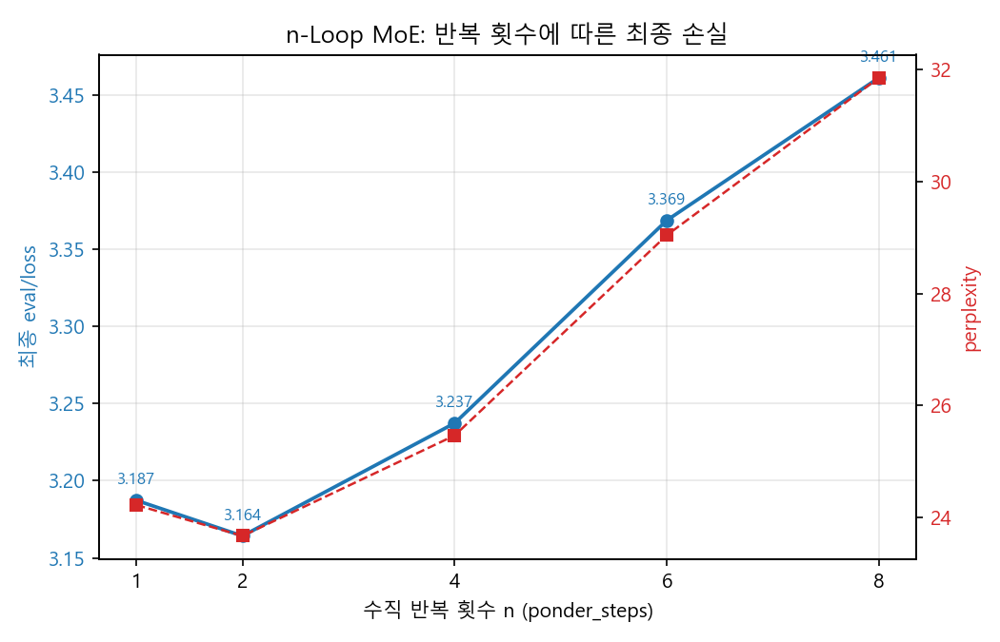
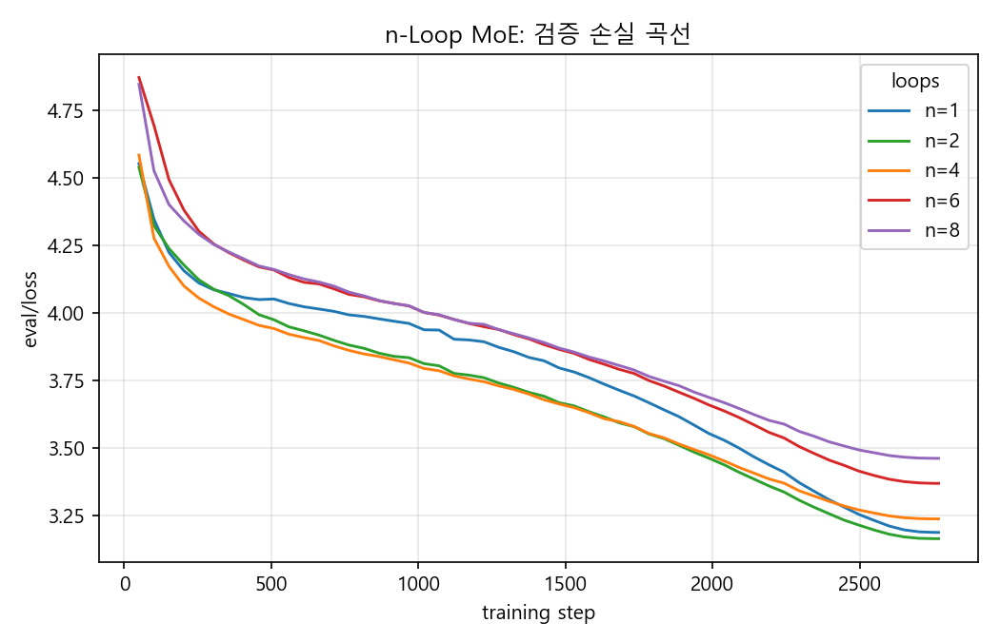
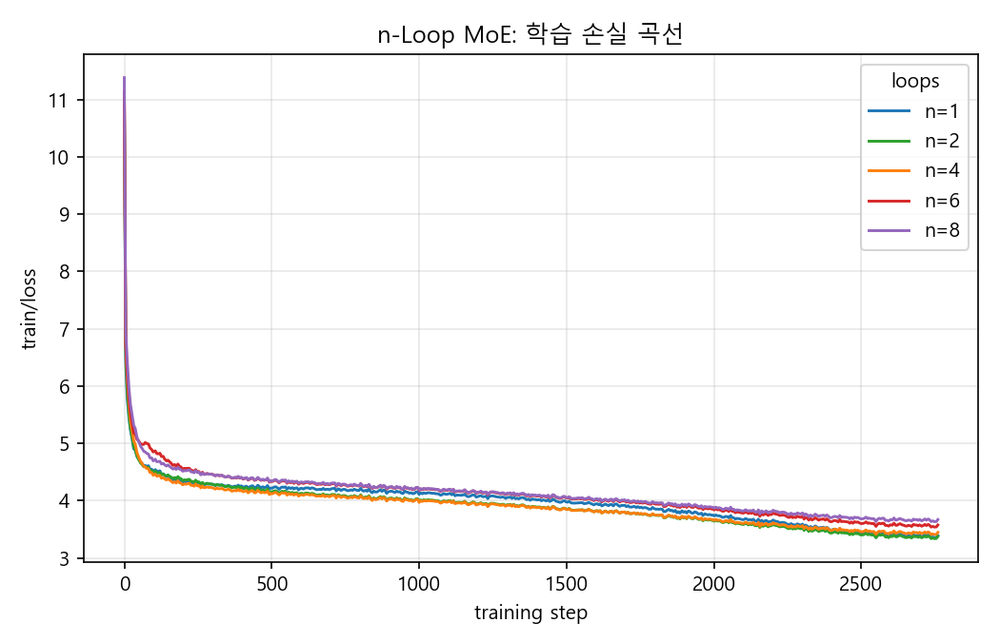
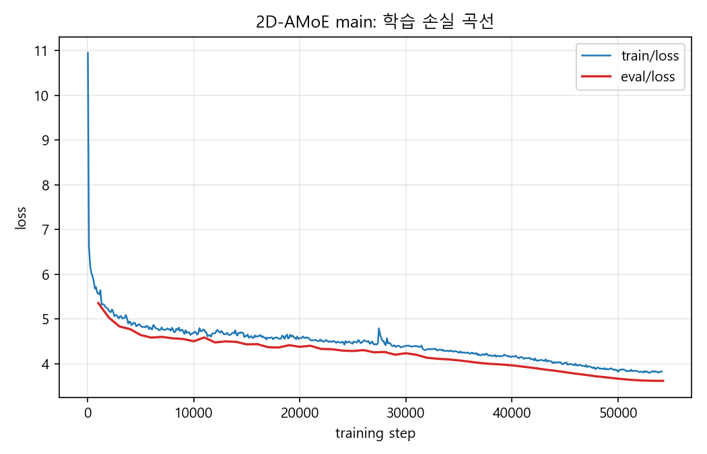
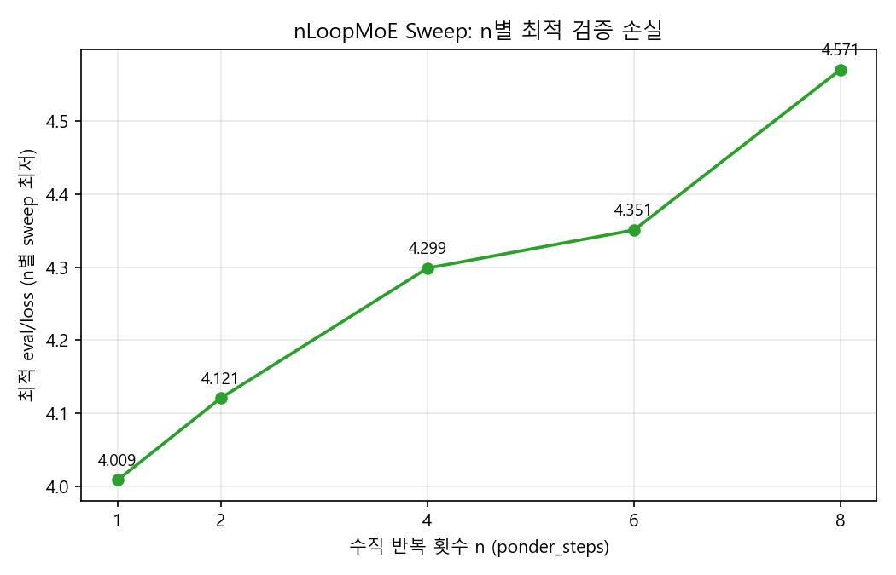
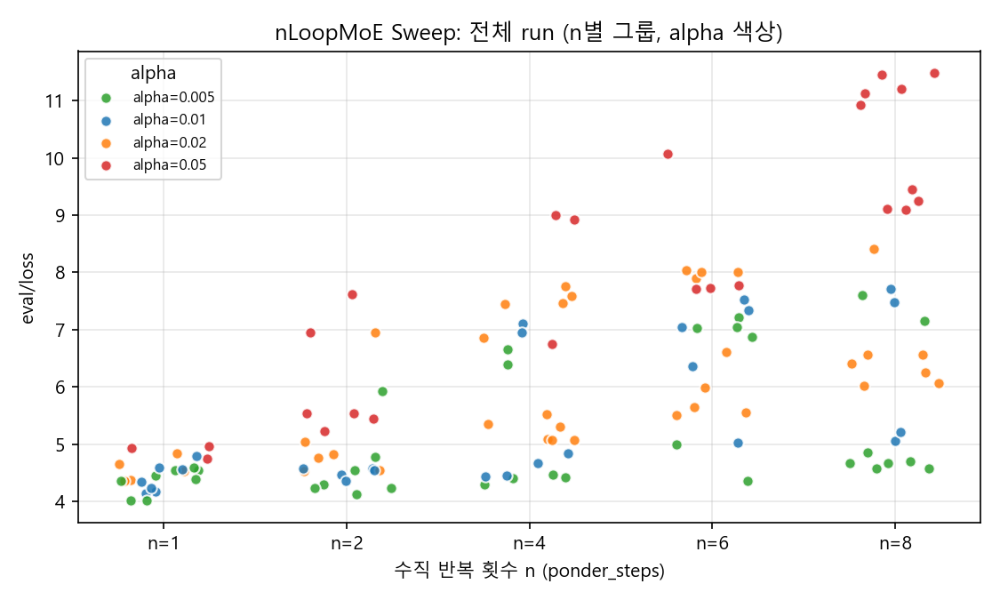
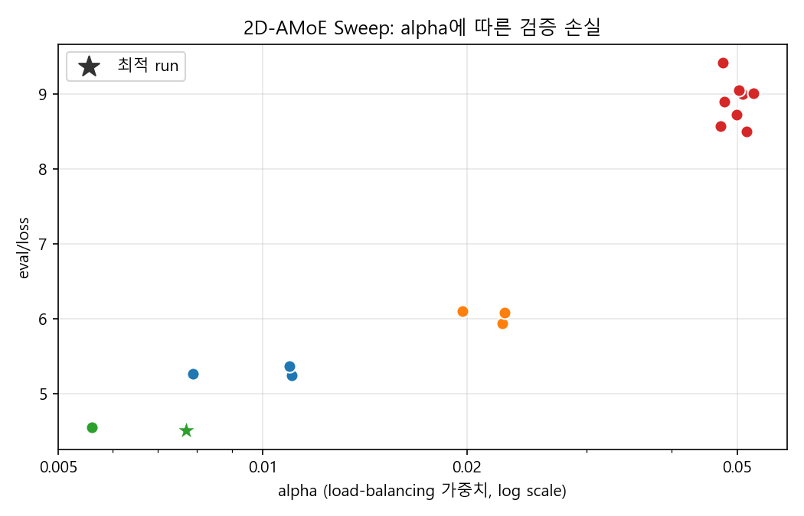
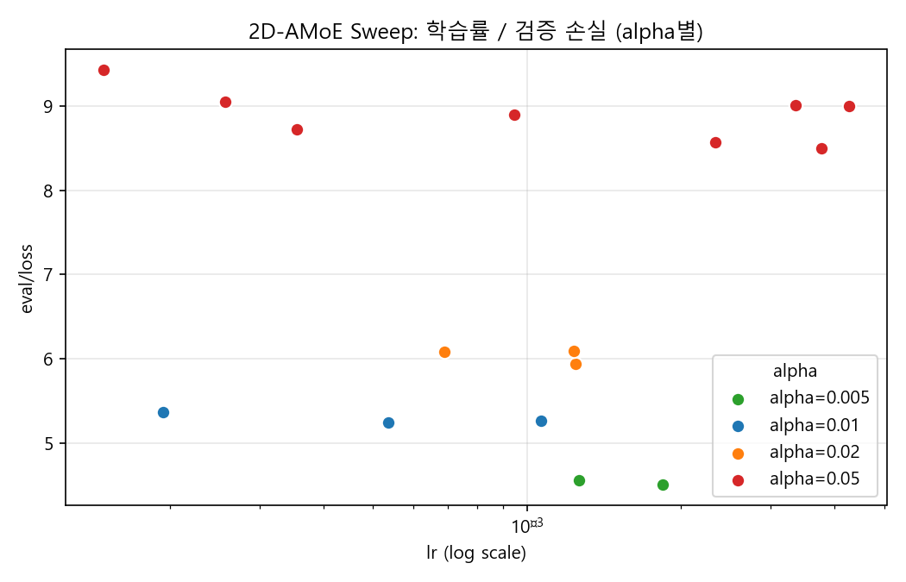

본 연구는 MoE의 수평적 확장과 동적 수직 깊이 조절을 단일 아키텍처로 결합한 2D-AMoE를 제안한다. PonderNet의 이산 기하분포 기반 적응적 halting을 MoE에 도입하여, 입력 토큰의 복잡도에 따라 연산 깊이를 동적으로 조절하고 추론 연산량을 절감하고자 하였다. 동일 규모(332M)의 단순 수직 반복 대조군(n-Loop MoE)과 비교한 결과, 2D-AMoE의 최종 task_CE는 3.394로 n-Loop MoE 중 task_CE가 가장 낮은 $n=4$ 의 3.218보다 다소 높았다. 그러나 적응적 halting이 연산 깊이를 자율적으로 조절하였고, 제한된 탐색 예산으로 인한 학습 초기 expert collapse에도 불구하고 손실 차가 약 0.18에 그친 점은, 추가적인 학습·탐색을 통해 2D-AMoE가 더 개선될 여지가 충분함을 시사한다.
기존의 연산 효율화 연구는 주로 순방향 신경망(FFN)의 구조를 병렬적으로 확장하는 수평적 접근과, 블록 및 FFN의 깊이를 제어하는 수직적 접근으로 양분되어 발전해 왔다. 이는 현대 대규모 언어 모델(LLM)의 효율성을 제고하는 핵심적인 두 축을 이루고 있으나, MoE 기반의 수평적 확장과 동적 깊이 조절을 통한 수직적 효율화를 단일 아키텍처 내에서 유기적으로 결합하여 시너지를 극대화한 시도는 여전히 제한적이다.
본 논문에서 정의하는 FFN의 수평적 축은 고정된 레이어 내에서 MoE와 같이 다수의 연산 모듈이 병렬적으로 배치되어, 입력 토큰에 따라 선택적으로 활성화되는 차원을 의미한다. 이와 대조적으로 수직적 축은 다층 신경망 구조에서 하위 레이어의 출력이 상위 레이어의 입력으로 전달되는 순차적 적층 구조를 뜻하며, 이는 토큰의 복잡도와 난이도에 따라 연산의 깊이를 동적으로 제어하는 대상이 된다.
이에 본 연구에서는 모델 용량 확장 시 Dense 모델 대비 연산 효율성을 극대화하는 새로운 아키텍처인 2D-AMoE를 제안하고자 한다. 2D-AMoE는 병렬 전문가의 수를 늘림으로써 개별 토큰 연산량의 증가 없이 전체 모델의 파라미터 규모를 확장하며, 입력 토큰의 복잡도에 따라 수직적 연산 깊이를 동적으로 조절하여 추론 연산량(FLOPs)을 획기적으로 절감하는 상호보완적 효율성 체계를 구축하는 것을 목적으로 한다.
기존의 Dense Transformer 모델(Vaswani et al., 2017)은 모든 파라미터가 매 토큰의 연산에 참여한다. 이로 인해 단순한 형태소나 구두점을 처리할 때도 복잡한 논리적 추론이 필요한 토큰을 처리할 때와 동일한 연산 자원이 소모된다는 비효율성이 존재한다. 또한, 모델의 규모가 커짐에 따라 요구되는 연산량 역시 선형적으로 증가하여 대규모 파라미터 모델을 학습하고 추론하는 데 막대한 비용이 발생한다. 이러한 한계는 토큰의 복잡도에 따라 연산량을 동적으로 할당하는 방식이나, 전체 파라미터 중 일부만을 활성화하는 희소 파라미터 방법론을 통해 극복할 수 있다.
연산의 효율성을 높이기 위한 동적 연산량 할당의 대표적인 선행 연구로는 ACT(Graves, 2016)와 PonderNet(Banino et al., 2021)이 있다. ACT는 모델이 자체적으로 연산의 조기 종료 시점을 결정하여 동적인 연산량 조절을 달성하였다. 반면 PonderNet은 이산 기하분포를 적용하여 블록의 반복 횟수를 확률적으로 제어함으로써, 모델 스스로 입력의 난이도에 맞춰 적절한 연산량을 할당하도록 유도하였다.
모든 파라미터가 활성화되는 Dense 모델의 근본적인 비효율성을 개선하기 위해 MoE(Shazeer et al., 2017)와 같은 희소 아키텍처가 도입되었다. MoE 구조에서는 라우팅 네트워크가 입력 토큰에 적합한 소수의 전문가 네트워크만을 선택적으로 활성화한다. 이를 통해 개별 토큰 연산에 참여하는 파라미터의 수는 제한하면서도 전체 모델의 파라미터 규모는 크게 확장할 수 있어, 연산량을 획기적으로 통제하는 동시에 모델의 성능을 향상할 수 있다.
VersatileFFN[8]은 인간의 인지 과정을 모사해 가상 전문가 경로와 깊은생각 경로 두가지로 토큰을 나누고 섞는 형식의 모델로 354.71M 모델에서 Vanilla 2.779 에서 VersatileFFN 2.617 으로 720.81M 모델에서 Vanilla 2.519 에서 VersatileFFN 2.430으로, 1.21B 모델에서 Vanilla 2.385 에서 VersatileFFN 2.319 로 Loss를 줄인 바 있다.
PonderNet(Banino et al., 2021)은 입력의 복잡도에 맞춰 연산 횟수를 동적으로 조절하는 적응형 계산 모델이다. 이 모델은 각 연산 단계의 종료 여부를 확률적 의사결정 문제로 정의하고, 예측된 종료 확률 분포와 기하분포 간의 KL Divergence를 정규화 항으로 사용하여 정확도와 효율성의 균형을 맞춘다. 실험 결과, Parity 과제의 외삽 환경에서 완벽에 가까운 성능을 달성하였으며, bAbI 벤치마크에서도 기존 모델(Universal Transformer 등) 대비 약 16%의 연산량만으로 20개 과제를 모두 해결하며 뛰어난 일반화 성능과 연산 효율성을 입증하였다.
기존 MoE의 병렬적 독립 연산 한계를 극복하기 위해 도입된 CoE[9]는 전문가들을 순차적으로 연결하여 은닉 표현을 반복 정제하는 아키텍처이다. 이 과정은 이전 단계의 결과($h_{t-1}$)를 라우팅 가중치($w_t^i$)에 따라 $i$번째 전문가($E_i$)가 이어받는 다음 수식으로 정의된다.
$$h_t = \sum_{i} w_t^i E_i(h_{t-1})$$
단일 레이어 내에서 독립적인 라우터를 거치며 전문가가 동적으로 재선택되므로 모델의 유효 깊이가 확장된다. 기존 MoE 대비 수학 추론에서 더 뛰어난 검증 손실 완화와 최대 42%의 메모리 절감을 달성하였다.
Muon은 기존 AdamW의 계산 비효율성과 업데이트 편향성을 개선하기 위해 행렬 직교화를 기반으로 고안된 옵티마이저이다. 그래디언트의 크기만을 조정하는 기존 방식과 달리, Muon은 그래디언트 모멘텀을 직교화하여 겹치지 않는 다방향 업데이트를 수행한다. 이 과정은 다음의 모멘텀 연산과 Newton-Schulz 반복 기반의 직교화 수식으로 정의된다.
$$M_t = \beta M_{t-1} + (1 - \beta) g_t$$
$$O_t = \text{Newton-Schulz}(M_t)$$
여기서 $M_t$는 그래디언트 모멘텀, $O_t$는 직교화된 업데이트 행렬을 의미한다. 이를 통해 특정 특이값 방향으로 학습이 과적합되는 현상을 방지하고 균형 잡힌 표현 학습을 유도한다. 특히 Moonlight-16B(Liu et al., 2025) 연구에서 Muon은 AdamW 대비 약 52%의 FLOPs만으로 동등한 성능을 달성하여 2배 수준의 계산 효율성을 입증하였다. 본 연구에서는 이러한 Muon의 높은 효율성을 활용하여 모델 최적화를 진행한다.
본 연구는 원시 WARC 파일에 trafilatura 추출 방식 및 엄격한 품질 필터링(Penedo et al., 2024)을 적용하여 MMLU 등 다양한 벤치마크에서 성능 우위를 입증한 FineWeb 데이터셋의 10B 토큰 공식 서브셋(sample-10BT)을 학습에 활용하였다.
초대형 코퍼스의 학습 병목을 해소하기 위해, 본 연구에서는 Rust 기반의 고속 BPE 알고리즘 구현체인 tiktoken을 활용하였다. 토큰화 공정에는 50,257개의 어휘 크기를 갖는 r50k_base 사전을 적용하였는데, 이는 의미적 정보의 압축률이 뛰어날 뿐만 아니라 최대 토큰 인덱스(0~50,256)가 16비트 정수형(uint16) 데이터 타입에 완전히 수용되도록 보장한다.
전처리 결과, 학습용 분할(train.bin)은 약 2B 토큰(3.72 GiB), 검증용 분할(val.bin)은 40M 토큰(76.3 MiB) 규모의 uint16 기반 NumPy 바이너리 배열로 구축되었다. 특히 데이터셋 분할 시 말뭉치의 경계를 직접 탐색하여 절단함으로써, 검증 데이터셋에서 컨텍스트의 시작이 단절되는 현상을 방지하고 메모리 효율성을 극대화하였다.
GPT-2에서 FFN을 MoE layer로 교체, ReLU를 GeLU로 교체, Attention을 FlashAttention으로 교체한 모델로, 현대적이고 대중적인 MoE architecture다. Load Balancing Loss를 추가하였다. 본 논문은 코드의 재사용성을 위해 n-Loop MoE와 통합하여 코드를 작성하였으며, MoE는 n-Loop MoE에서 $n=1$ 인 경우에 해당한다.
MoE 학습 시 일부 전문가에게 토큰이 쏠리는 expert collapse 현상을 막기 위해, 데이터에 대한 CE(Cross Entropy) Loss(task_CE)뿐만 아니라 Load Balance Loss(LBL)를 추가하였다. LBL은 Switch Transformer[5]의 구현을 그대로 따라 다음과 같이 정의된다.
$$\text{LBL} = \alpha \, N \sum_{i=1}^{N} f_i P_i$$
여기서 $N$ 은 전문가의 수, $f_i$ 는 $i$ 번째 전문가로 분배된 토큰의 비율, $P_i$ 는 라우터가 $i$ 번째 전문가에 할당한 평균 확률, $\alpha$ 는 가중치 계수를 의미한다. $\alpha$ 값은 Sweep에서 최적인 0.005로 설정하였다.
n-Loop MoE는 2D-AMoE의 수직 반복의 로직이 정말 효율적인가에 대한 대조군으로 2D-AMoE의 이산 기하분포를 따르는 로직 대신, 단순히 MoE layer를 residual 하게 $n \in \{2, 4, 6, 8\}$ 번 반복한 구현체이다. MoE Layer를 반복했다는 것을 제외하면 2.1의 MoE와 완전히 architecture가 같다. 이 또한 alpha의 값은 0.005로 같다.
본 논문의 핵심 제안 모델인 2D-AMoE 는 기존 MoE에서 수직 방향 재귀를 추가하고 이산 기하분포를 적용하여 residual하게 연결한 모델로 PonderNet에서 영감을 받았다.
전체 학습 손실은 과제 손실(task_CE)과 load-balancing 손실(LBL, 식은 2.1 참조)에 더해, 각 레이어의 halting 분포를 기하분포 prior로 정규화하는 ponder 손실 $\mathcal{L}_{\text{ponder}}$ 을 포함한다. PonderNet을 따라, 이는 절단·정규화된 기하분포 prior $p_G$ 와 레이어별 halting 분포 $p_\ell$ 사이의 KL divergence를 레이어에 대해 평균한 값으로 정의된다.
$$p_G(t) = \frac{\lambda_p (1-\lambda_p)^{t}}{\displaystyle\sum_{\tau=0}^{T-1} \lambda_p (1-\lambda_p)^{\tau}}, \qquad t = 0, 1, \dots, T-1$$
$$\mathcal{L}_{\text{ponder}} = \frac{1}{L}\sum_{\ell=1}^{L} \sum_{t=0}^{T-1} p_\ell(t)\,\Big(\log p_\ell(t) - \log p_G(t)\Big)$$
여기서 $T$ 는 최대 ponder 스텝 수, $L$ 은 레이어 수, $p_\ell(t)$ 는 $\ell$ 번째 레이어에서 스텝 $t$ 에 종료(halt)할 확률(배치 및 전문가 차원에 대해 평균), $\lambda_p$ 는 기하분포 prior의 파라미터이다. 이 항은 모델이 불필요하게 깊은 연산을 수행하지 않도록 유도하여 조기 종료를 학습시킨다.
n-Loop MoE를 수직 반복 횟수 $n \in \{1, 2, 4, 6, 8\}$ 에 대해 학습하였다. 모든 모델은 332.1M의 파라미터와 $n$ 값을 제외한 모델 아키텍처가 완전히 동일하고, $n$ 값만의 차이를 가진다. eval/loss(= task_CE + 0.005·LBL) 기준으로는 $n=2$ 에서 최저(3.164, 표 1)를 보이는데, 이는 load-balancing 손실(LBL)이 $n$ 이 커질수록 증가하여 eval/loss를 끌어올리기 때문이다. 반면 순수 품질 지표인 task_CE 기준으로는 $n$ 이 커질수록 손실이 개선되어 $n=4$ 에서 최저(3.218, 표 2)를 기록하였다. (반복 횟수별 손실 곡선은 부록 A 참조.)
| run | 반복 $n$ | eval/loss | perplexity | n_params |
|---|---|---|---|---|
| full-n1 | 1 | 3.187 | 24.22 | 332.1M |
| full-n2 | 2 | 3.164 | 23.67 | 332.1M |
| full-n4 | 4 | 3.237 | 25.47 | 332.1M |
| full-n6 | 6 | 3.369 | 29.04 | 332.1M |
| full-n8 | 8 | 3.461 | 31.86 | 332.1M |
학습 종료 후, $n=1, 2, 4$ 에 대해 정확도용 평가(eval-quality)와 효율용 평가(eval-compute)를 추가로 수행하였다. $n=6, 8$ 은 표 1의 eval(200K 토큰) 결과가 충분히 우수하지 않아 별도 평가를 수행하지 않고 선형 보간을 이용하였다.
| 반복 $n$ | task_CE | perplexity | avg LBL | eval_loss (task_CE + 0.005·LBL) |
|---|---|---|---|---|
| 1 | 3.3414 | 28.26 | 12.86 | 3.4057 |
| 2 | 3.2671 | 26.24 | 24.14 | 3.3878 |
| 4 | 3.2182 | 24.98 | 48.22 | 3.4593 |
| 반복 $n$ | FLOPs / token |
|---|---|
| 1 | 275.4 MFLOP |
| 2 | 388.8 MFLOP |
| 4 | 615.4 MFLOP |
| 6 | 842.0 MFLOP† |
| 8 | 1,068.7 MFLOP† |
$n=1, 2, 4$ 는 실측값이다. FLOPs/token이 $n$ 에 대해 완벽한 선형 관계 $\text{FLOPs/token} \approx 162.1 + 113.3\,n$ (MFLOP)를 보이므로, $n=6, 8$ †은 이를 이용해 보간하였다 ($n=6$: $162.1 + 6{\times}113.3 = 842.0$, $n=8$: $162.1 + 8{\times}113.3 = 1{,}068.7$).
최종 2D-AMoE main 모델(332.26M, 최대 반복 8회, $\alpha=0.005$)을 학습 후, 정확도용 평가와 효율용 평가를 별도로 수행하였다.
| 지표 | 값 |
|---|---|
| eval_loss (task_CE + 0.005·LBL) | 3.8343 |
| task_CE | 3.3940 |
| avg LBL | 88.0684 |
| perplexity | 29.78 |
| eval tokens | 19,973,447 |
| 지표 | 값 |
|---|---|
| total FLOPs | 1.601×10¹⁶ (20M 토큰) |
| FLOPs / token | 8.005×10⁸ (800.5 MFLOP) |
| avg ponder step | 2.122 step/token (max 8) |
| ponder_max step | 5.6† |
FLOPs는 PyTorch flop_counter로 측정하였으며, 행렬곱(matmul)만 MAC×2로 계산하고 sort·scatter·elementwise 연산은 포함하지 않으므로 실제 연산량은 이보다 다소 많다. 적응적 halting에 의해 토큰당 평균 2.12/8 스텝만 연산되어, 조기 종료가 정상 작동함을 확인하였다. 여기서 avg ponder step은 각 스텝의 종료(halt) 확률을 가중치로 한 기대값 $\left(\sum_{k} k\,p_k\right)$ 이다. 예컨대 halt 확률이 $(0.5, 0.3, 0.2)$ 이면 $1{\times}0.5 + 2{\times}0.3 + 3{\times}0.2 = 1.7$ 로 계산된다. 반면 ponder_max step은 가중 평균이 아니라 실제 연산된 최대 스텝 수로, n-Loop의 선형 FLOPs 관계를 역산하여 구하였다: $(800.5 - 162.1)/113.3 \approx 5.6$ (보간값 †).
2D-AMoE의 최종 task_CE는 3.394로, n-Loop MoE 중 task_CE가 가장 낮은(최고 성능) $n=4$ 의 3.218보다 약 0.18 높다. 이 수치만 놓고 보면 2D-AMoE가 더 나은 아키텍처가 아니라고 판단할 수 있다.
그러나 다음 두 가지를 고려해야 한다. 첫째, 2D-AMoE의 적응적 halting은 별도의 깊이 지정 없이 평균 2.12 step(최대 8)으로 수렴하여, 모델이 스스로 연산 깊이를 조절함을 보였다. 둘째, 실험 예산의 한계로 하이퍼파라미터 sweep의 횟수가 충분하지 않아 최적 파라미터를 확보하지 못하였고, 그 결과 학습 초기에 expert collapse가 발생하였다(표 4의 avg LBL 88.07은 심한 부하 불균형을 나타낸다). 이러한 불리한 조건에도 불구하고 최종 task_CE가 최고 성능 대조군인 $n=4$ 와 약 0.18 차이에 그친 점은, 충분한 탐색과 안정화를 통해 2D-AMoE가 대조군을 상회할 여지가 있음을 시사한다.
한편 효율 측면에서, 2D-AMoE의 가중 평균 halting 깊이는 2.12 step이었으나 실제 연산된 FLOPs는 약 5.6 step에 해당하였다(표 5). 즉 토큰의 출력이 사실상 결정되는 기대 깊이(2.12 step)보다 훨씬 깊은 약 5.6 step에 이르러서야 연산이 종료된 것이다. 이는 추론 시 조기 종료의 임계값인 엡실론($\epsilon$)을 조정하여 성능과 연산 시간 사이의 trade-off를 제어함으로써 개선할 수 있을 것으로 보인다.
본 연구는 MoE의 수평적 확장과 적응적 수직 깊이 조절을 단일 아키텍처로 결합한 2D-AMoE를 제안하고, 동일 규모(332M)의 단순 수직 반복 대조군(n-Loop MoE)과 비교하였다. 현재 결과에서 2D-AMoE는 task_CE 기준 최고 성능 대조군($n=4$)에 약 0.18 못 미쳤으나, 적응적 halting이 별도의 지정 없이 연산 깊이를 자율적으로 조절하고, expert collapse라는 불리한 조건에서도 손실 격차가 작았다는 점에서 개선 잠재력을 확인하였다.
본 연구의 한계는 다음과 같다. 첫째, 데이터셋(토큰)의 난이도에 따라 ponder step이 어떻게 달라지는지 분석하지 못하였다. 이는 "복잡한 토큰에 더 깊은 연산을 할당한다"는 적응적 깊이 조절의 핵심 가설을 직접 검증하지 못한 한계이다. 둘째, 학습 규모(토큰 수 및 step)가 충분하지 않아 모델이 완전히 수렴하지 못했을 가능성이 있다. 셋째, 하이퍼파라미터 sweep의 횟수가 충분하지 않아 최적 설정을 확보하지 못하였고, 이것이 학습 초기 expert collapse의 원인으로 작용하였다.
향후 연구에서는 더 큰 학습 예산과 폭넓은 sweep, 그리고 토큰 난이도와 연산 깊이(ponder step) 간 상관 분석을 통해 2D-AMoE의 효율성을 정량적으로 규명할 필요가 있다.
끝으로, 본 논문에 제시된 정량 결과는 제한된 실험 예산 하에서 얻어진 잠정치임을 밝힌다. 향후 충분한 학습 규모와 하이퍼파라미터 탐색을 확보한 추가 실험을 통해 이를 보완하고, 2D-AMoE의 효율성을 보다 엄밀히 검증할 것을 제언한다.
[1] Vaswani, A., Shazeer, N., Parmar, N., Uszkoreit, J., Jones, L., Gomez, A. N., ... & Polosukhin, I. (2017). Attention is all you need. Advances in Neural Information Processing Systems, 30.
[2] Shazeer, N., Mirhoseini, A., Maziarz, K., Davis, A., Le, Q., Hinton, G., & Dean, J. (2017). Outrageously large neural networks: The sparsely-gated mixture-of-experts layer. arXiv preprint arXiv:1701.06538.
[3] Graves, A. (2016). Adaptive computation time for recurrent neural networks. arXiv preprint arXiv:1603.08983.
[4] Banino, A., Balaguer, J., Blundell, C., ... & Hassabis, D. (2021). PonderNet: Learning to ponder. arXiv preprint arXiv:2107.05407.
[5] Fedus, W., Zoph, B., & Shazeer, N. (2022). Switch transformers: Scaling to trillion parameter models with simple and efficient sparsity. The Journal of Machine Learning Research, 23(1), 5232-5270.
[6] Penedo, G., et al. (2024). The FineWeb Datasets: Decanting the Web for the Finest Text Data at Scale. arXiv preprint arXiv:2406.17557.
[7] Liu, J., et al. (2025). Moonlight: A compute-optimal MoE scaling law and model. arXiv preprint (under review).
[8] VersatileFFN. (서지정보 추후 보완)
[9] Chain-of-Experts (CoE). (서지정보 추후 보완)
n-Loop MoE(대조군, 그림 A1–A3)와 2D-AMoE main 모델(그림 A4)의 학습 과정 손실 곡선이다.




각 반복 횟수 $n$ 의 최적 설정을 찾기 위해, $n$ 은 모델 아키텍처를 결정하므로 이를 1차 기준으로 그룹화하여 Bayesian sweep을 수행하였다. 탐색 변수는 $\mathrm{lr}$, $\mathrm{muon\_lr}$, $\alpha$, 그리고 $n \in \{1,2,4,6,8\}$ 이며, 단축 예산 1,357 step으로 학습하였다. 125개 run(n별 23~28개)을 분석하였다.
모든 $n$ 에서 $\alpha=0.005$ 가 최적이었고(그림 B2), $n$ 의 최적 손실은 $n$ 이 커질수록 단조 증가하였다(그림 B1). 이는 단순 residual 반복의 깊이 확장이 단축 예산에서 오히려 학습을 어렵게 함을 보이며, 각 $n$ 의 최적 설정은 부록 A의 full-budget run(full-n$k$)에 그대로 사용되었다.


| 반복 $n$ | 최적 run | $\alpha$ | lr | muon_lr | eval/loss | perplexity |
|---|---|---|---|---|---|---|
| 1 | electric-sweep-26 | 0.005 | 0.003168 | 0.02605 | 4.0086 | 55.1 |
| 2 | mild-sweep-97 | 0.005 | 0.001475 | 0.01611 | 4.1210 | 61.6 |
| 4 | eternal-sweep-58 | 0.005 | 0.001598 | 0.008679 | 4.2987 | 73.6 |
| 6 | quiet-sweep-52 | 0.005 | 0.002532 | 0.01228 | 4.3510 | 77.6 |
| 8 | resilient-sweep-99 | 0.005 | 0.00118 | 0.008135 | 4.5707 | 96.6 |
2D-AMoE의 주요 하이퍼파라미터를 Bayesian sweep으로 탐색하였다. 탐색 변수는 학습률 $\mathrm{lr}$, Muon 학습률 $\mathrm{muon\_lr}$, 종료 확률 사전분포 계수 $\mathrm{ponder\_beta}$, load-balancing 손실 가중치 $\alpha$ 이며, 그 외 최대 반복 8회, $\text{experts}=4$, $\text{block\_size}=768$ 은 고정하였다. 각 run은 탐색 효율을 위해 1,357 step의 단축 예산으로 학습하였으므로, 이 절의 손실값은 full-budget 결과(부록 A, 54k step)와 직접 비교할 수 없다. 16개 run을 분석 대상으로 한다.
탐색 결과, 검증 손실을 지배하는 변수는 $\alpha$ 였다. $\alpha=0.005$ 에서 최저 손실(4.50)을 보였고, $\alpha$ 가 커질수록 손실이 단조적으로 악화되어 $\alpha=0.05$ 에서는 8.5~9.4 수준으로 발산에 가까운 학습 실패를 보였다(그림 C1). 반면 $\mathrm{lr}$·$\mathrm{ponder\_beta}$ 는 동일 $\alpha$ 내에서 손실에 상대적으로 작은 영향만을 미쳤다(그림 C2). 최적 설정은 $\alpha=0.005$, $\mathrm{lr}=1.84\times10^{-3}$, $\mathrm{muon\_lr}=3.23\times10^{-2}$, $\mathrm{ponder\_beta}=1.33\times10^{-2}$ (laced-sweep-9, eval/loss 4.50) 였다.


| 순위 | run | $\alpha$ | lr | muon_lr | ponder_beta | eval/loss | perplexity |
|---|---|---|---|---|---|---|---|
| 1 | laced-sweep-9 | 0.005 | 0.001841 | 0.03227 | 0.01335 | 4.5034 | 90.3 |
| 2 | lucky-sweep-8 | 0.005 | 0.001264 | 0.01022 | 0.001737 | 4.5534 | 95.0 |
| 3 | volcanic-sweep-16 | 0.01 | 0.0005356 | 0.005831 | 0.001279 | 5.2434 | 189.3 |
| 4 | good-sweep-11 | 0.01 | 0.001068 | 0.006329 | 0.07271 | 5.2618 | 192.8 |
| 5 | fearless-sweep-18 | 0.01 | 0.0001939 | 0.008888 | 0.002723 | 5.3653 | 213.9 |
| 6 | smooth-sweep-10 | 0.02 | 0.001245 | 0.01075 | 0.009334 | 5.9364 | 378.6 |
| 7 | still-sweep-19 | 0.02 | 0.0006907 | 0.007802 | 0.004294 | 6.0834 | 438.5 |
| 8 | hearty-sweep-15 | 0.02 | 0.001237 | 0.009319 | 0.06144 | 6.0973 | 444.6 |
| 9 | charmed-sweep-12 | 0.05 | 0.003773 | 0.01775 | 0.001982 | 8.5002 | 4915.7 |
| 10 | distinctive-sweep-7 | 0.05 | 0.00234 | 0.01216 | 0.001338 | 8.5700 | 5271.4 |
| 11 | frosty-sweep-5 | 0.05 | 0.0003549 | 0.02037 | 0.004475 | 8.7250 | 6154.6 |
| 12 | faithful-sweep-14 | 0.05 | 0.0009456 | 0.01106 | 0.01655 | 8.9017 | 7344.3 |
| 13 | drawn-sweep-6 | 0.05 | 0.004276 | 0.04329 | 0.07994 | 9.0055 | 8147.5 |
| 14 | firm-sweep-13 | 0.05 | 0.003352 | 0.006806 | 0.08167 | 9.0161 | 8234.4 |
| 15 | vital-sweep-20 | 0.05 | 0.0002564 | 0.008549 | 0.02796 | 9.0533 | 8547.1 |
| 16 | faithful-sweep-17 | 0.05 | 0.0001482 | 0.009569 | 0.05143 | 9.4269 | 12417.4 |